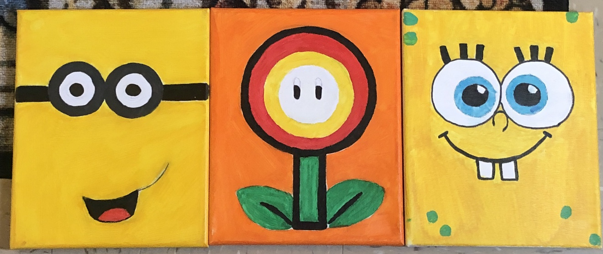

This page features acyrlic paintings.
Cartoon Characters
This is a collage of three different cartoon paintings I did. The first one on the left is disciple me. The painting in the center is of a fire flower from super Mario bros. The last painting is of SpongeBob from SpongeBob SquarePants.
Flowers

This is a painting of blue and pink sunflowers. Sunflowers are one of my favorite flowers. I decided to paint the flowers pink and blue instead of yellow for aesthetic purposes.
For information on how to create acrylic paintings click here, or to return to the main Acyrlic paintings page click here